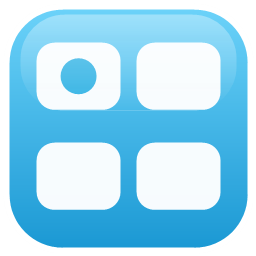
Couchtop
Turn your Windows PC into a couch console.
Three shells, one setting.
Windows 10 1809+ or Windows 11. Install per user with no admin needed, or grab the portable zip and run it from any folder. The beta isn't code-signed yet, so SmartScreen may ask you to click More info → Run anyway.
Three shells
Each shell is a whole look, not a skin: its own colours on every screen, its own icons, its own sounds and its own way of moving around. Switch between them live in Settings › Display. Your apps, games, files and settings come with you.
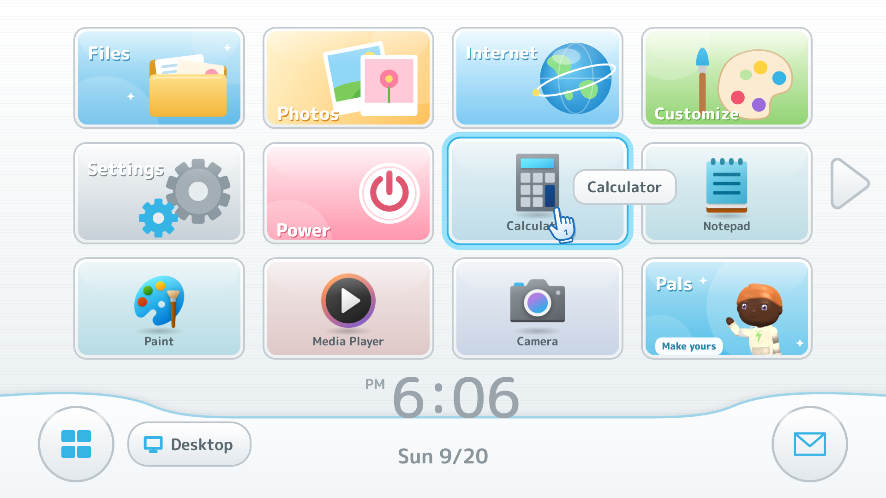
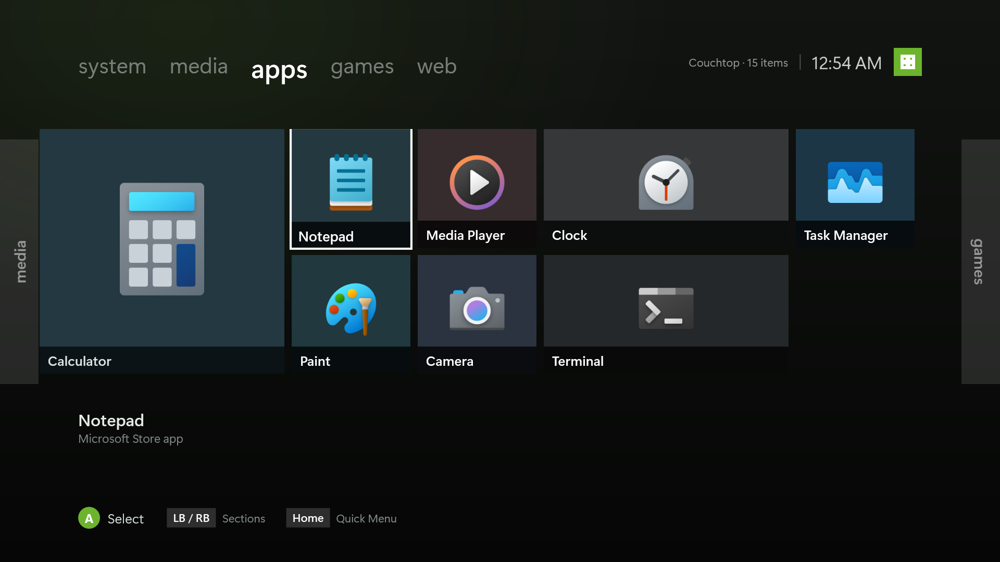
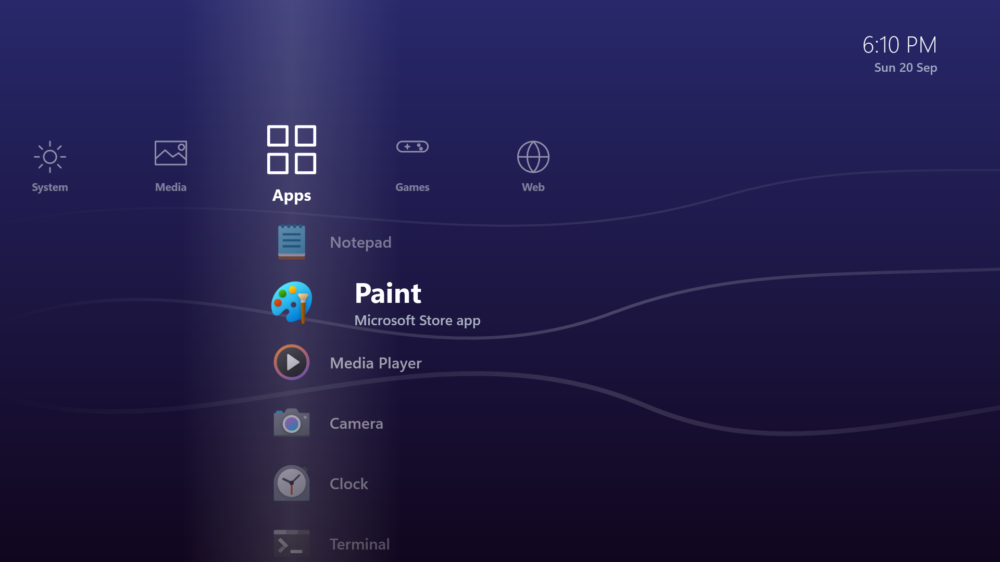
Screenshots
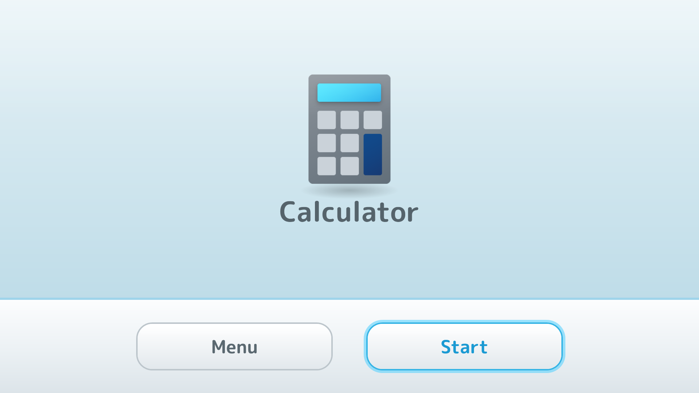
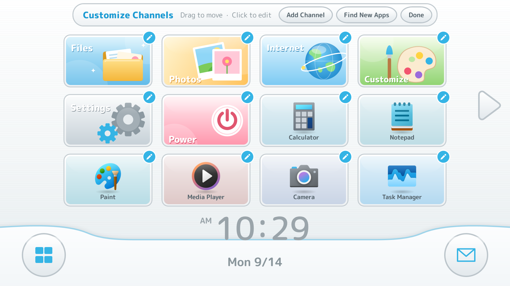
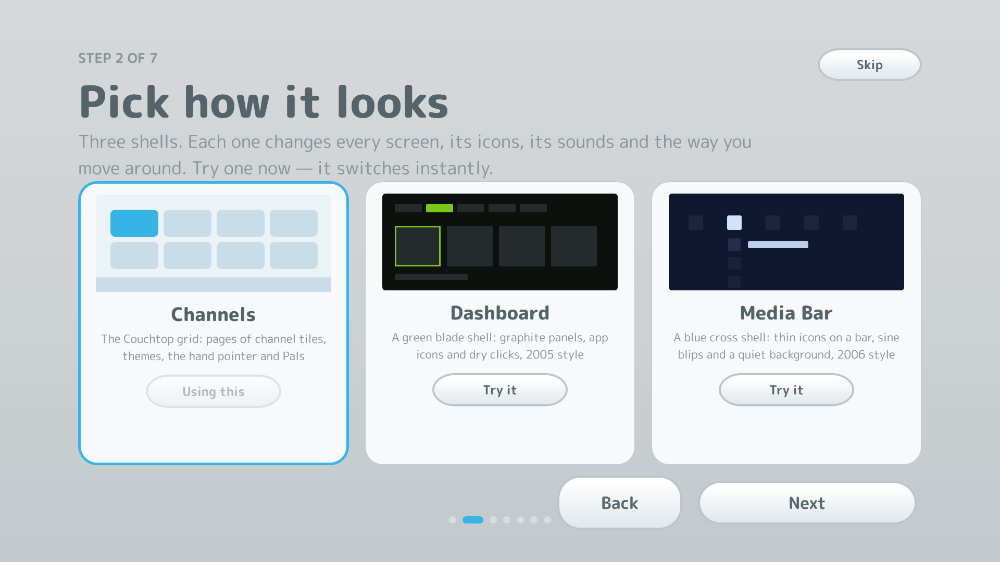
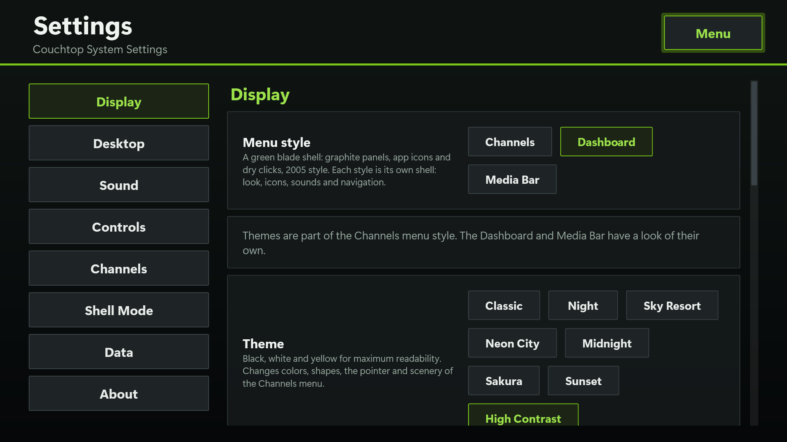
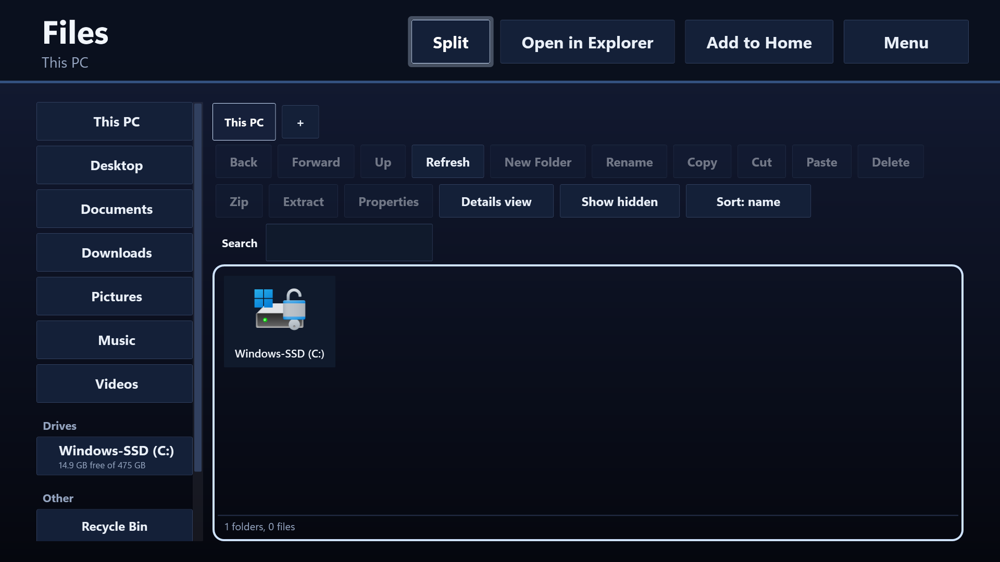
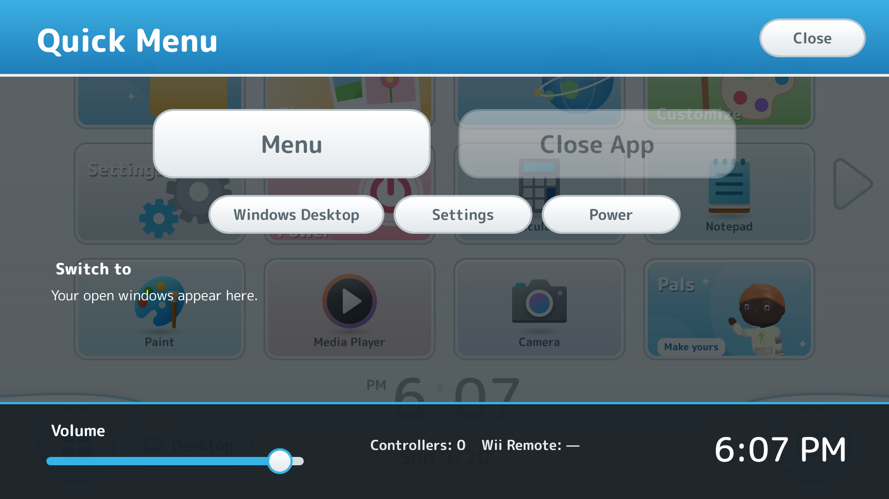
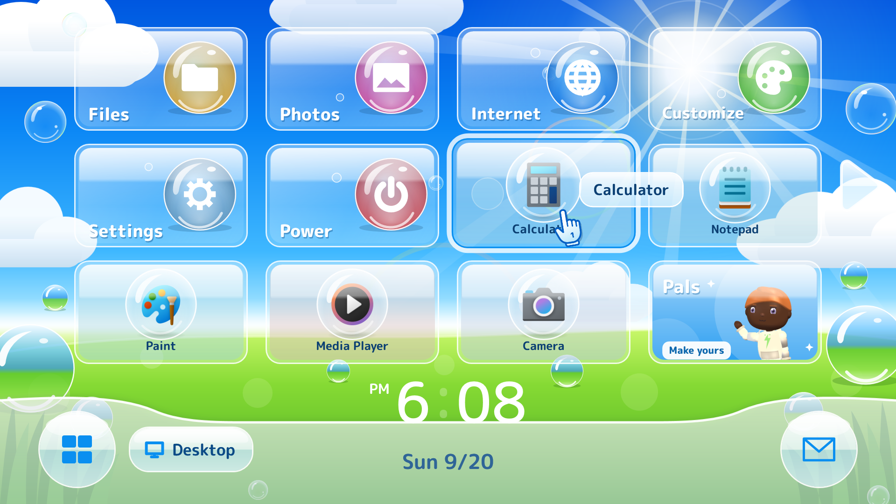
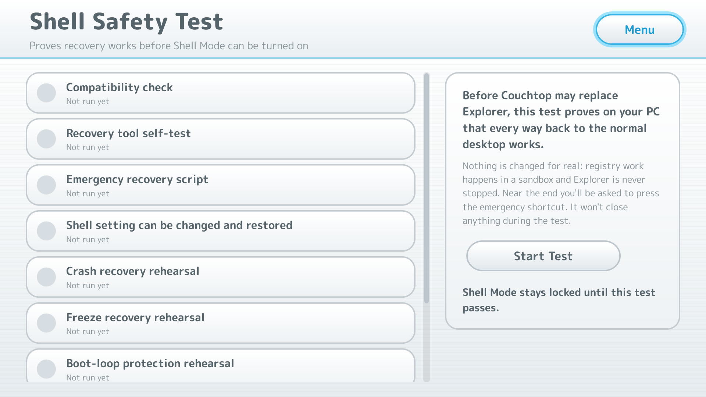
Support Couchtop
Couchtop is an independent project, free and open source, built in the open. If you like where it is going, you can buy me a coffee — it goes straight into the next build.